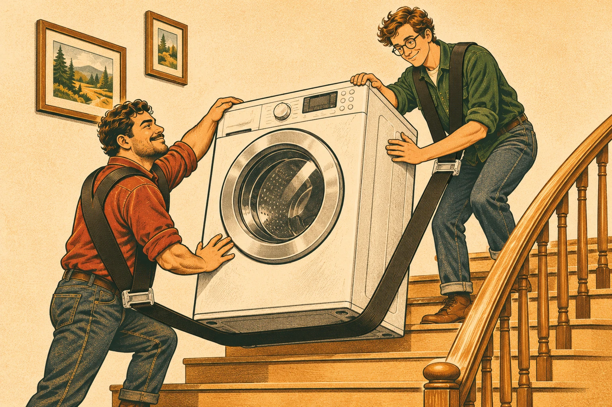

Services
Furniture carryouts and small cleanouts around St. Paul. Show us what needs to go, and we’ll work out the pickup with you.
Furniture carryouts
One couch, a few bulky pieces or the leftovers from a small move. Send photos so we can confirm the load and carryout.
Mattresses and box springs, TVs, fridges and other appliances.
Stairs & heavy items
Show us the item, stair turns and tight doorways when you request a quote. Heavy appliances and difficult carries need a check before we book.

Other jobs
A garage corner, packed boxes or a small load already at the curb. Send a photo of the whole pile so we can check what fits.
Pickup day
Clear a walking path, mark what goes and keep pets away from the carry route. Tell us about parking, gates, stairs and building access.
We’ll walk through the agreed items and carry route with you. The scope and total need to be confirmed before anything is loaded.
Frequently asked questions
Planning a pickup? Start here, then send the details of your job so we can confirm the plan with you.
What can you pick up?
Can you take just one couch or a whole room?
A single furniture carryout or a small cleanout is a good place to start. Send photos of everything you want removed, including any pieces that need to come apart. We’ll confirm the load before booking.
What about a mattress, TV, washer or fridge?
Ask first. These items can need special handling or have extra disposal fees. Include the item type, a photo and its location so we can confirm whether we can take it and what the total would be.
Are there items you won’t take or that cost extra?
Chemicals, paint, fuel, suspected asbestos and other hazardous or unknown loads are outside this pickup offer. Ask first about mattresses, TVs, appliances or anything that needs special handling. We’ll confirm accepted items and any extra charges before booking. Keep unconfirmed items separate from the agreed load.
Do you pick up in my ZIP code?
We’re focused on St. Paul and nearby areas. Include your five-digit pickup ZIP in the quote request so we can check the location and schedule.
Carrying, safety and injuries
Can you carry items on stairs or from a basement?
Tell us how many flights, whether there are turns and how wide the doors are. Send pictures of the whole carry route. We need to check the item, access and crew needed before accepting a difficult carry.
Should I help carry? What if I can’t lift?
Tell us you need the full carryout handled when you request a quote. We’ll confirm the people needed for the job. Check with the crew before joining a lift, and keep children and pets away from the carry route.
How do you check a tight or difficult carry?
Show us the item and the route to the truck, including narrow doors, landings and obstacles. The crew needs to agree on the route and handling before moving it. If the access differs from the photos, the plan may need to change.
What if someone gets hurt or something is damaged?
Stop the work and tell the crew right away so the concern can be addressed. Ask about coverage and how damage concerns are handled before booking, especially if your building has specific requirements.
Getting ready
What photos should I send?
Take one wide photo of the entire load, close-ups of bulky or unusual items, and photos of stairs, doorways and the route outside. Attach them to the email draft after you fill out the quote request.
What should I clear or mark beforehand?
Mark the items that are going and separate anything you want to keep. Clear the walking route and move fragile belongings out of the way. Mention any part of the route you can’t clear yourself.
Should I empty furniture or disconnect appliances?
Empty drawers and cabinets before the pickup unless you’ve agreed otherwise. For appliances, confirm acceptance and preparation requirements first, including who will handle any disconnection. Don’t start a disconnection you’re unsure about.
What about pets, gates, elevators and parking?
Include entry codes, elevator reservations, parking limits and building rules in your request. Keep pets in a separate area during the carryout, and tell us if the truck can’t park near the exit.
Who arrives and what happens
Will Devin and Jonathan both be there?
Devin and Jonathan are the pickup crew. The people and crew size for your particular job need to be confirmed before booking, based on the load, stairs and access.
How will I know who is coming and when?
Confirm the arrival window and who to expect when you arrange the pickup. If you need a call on arrival or a specific entrance used, include that in your request.
Do I need to be home?
Arrange access and who can approve the pickup before booking. If you won’t be there, confirm that plan with us first and clearly identify the agreed items.
Can I add something on pickup day?
Point it out before loading. A larger load or different carry route can change the work and total. Any change needs to be agreed before the extra items are loaded.
Quotes, timing and disposal
What affects the quote? When is the price final?
The items, load size, stairs, access, location and any special handling all matter. Photos help us understand the job. The scope and total need to be confirmed before loading, with changes agreed as they come up.
How soon can I get on the schedule?
Send your preferred day with the request. We’ll check the crew and transport needed, then confirm an available window with you. A quote request by itself doesn’t reserve a pickup.
How do payment and receipts work?
Confirm the payment method, when payment is due and any receipt you need when you arrange the job. Include building or reimbursement requirements early so they can be checked before booking.
Where do my items go?
The destination depends on the item and the available disposal or reuse options. Ask about the plan for your particular load before booking, especially if you need a donation arrangement or specific documentation.
Why choose 2 Loons Pickup?
When is this service a good fit?
Start with us when you have furniture or a small cleanout and need help getting it out to the truck. You can share the exact load and access up front, then agree on the carryout and total before loading.
Could the city or my trash hauler take it?
Possibly. If you can get the item to the curb, check Saint Paul’s bulky-item collection and your hauler’s eligibility, accepted items and scheduling rules. Tell us if carrying it out is the part you need help with.
Who else offers junk pickup? What should I compare?
Local options include Junk Guys and 1-800-GOT-JUNK? Twin Cities. Compare the full load, carryout, stairs, disposal fees, schedule and total. Ask each provider about coverage and any building requirements before choosing.
Show us what needs to go
Send your pickup ZIP, the items and any stairs or access details. Attach photos in your mail app before sending.